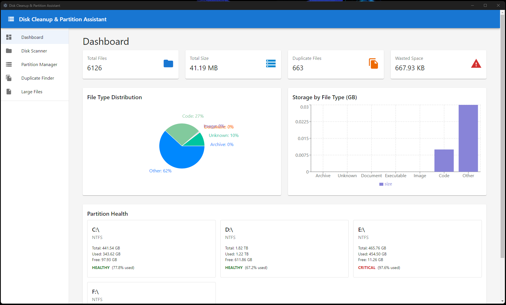

Screenshots
See Smart Disk Analyzer in action

📊 Dashboard
Real-time disk statistics, partition health monitoring, and visual charts showing file type distribution and storage usage.

🔍 Disk Scanner
Recursively scan directories with customizable depth. View detailed file information including name, type, size, and path.

💾 Partition Manager
Comprehensive partition management with health indicators. View capacity, usage, and perform operations on all partitions.

👥 Duplicate Finder
MD5 hash-based duplicate detection. Find duplicate groups and see potential space savings at a glance.

📁 Large Files
Set size thresholds to find large files consuming disk space. Perfect for identifying cleanup candidates.